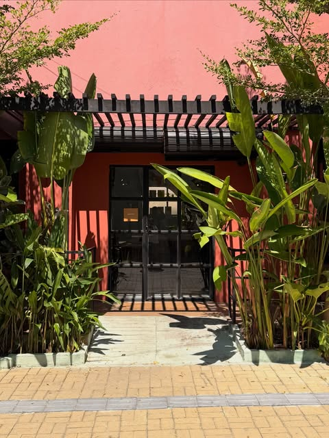
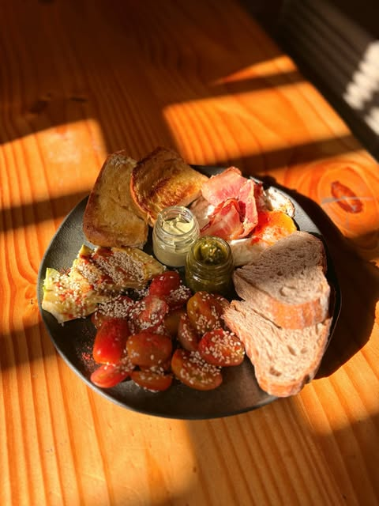
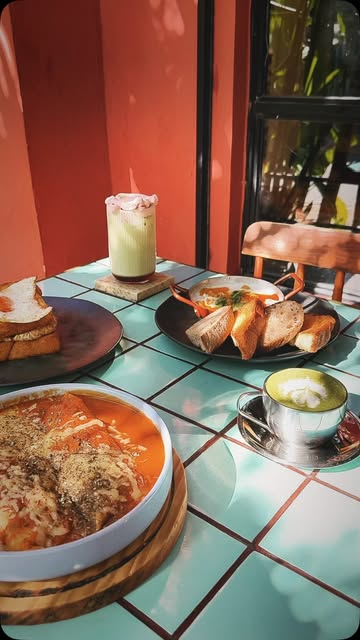
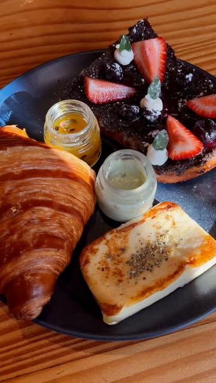

1ºMais votada pelo público no Melhores Sabores da Cidade 2025
Um café pra conversar, aprender e se sentir na casa dos amigos.
Cafés filtrados em onze métodos, chás de origem, bruschettas e prato feito de café da manhã, numa casa colorida na Aldeota. Não precisa reservar.
Seu café filtrado, do jeito que você escolher:
- Hario V60
- Kalita
- Origami
- Koar
- Aeropress
- Chemex
- Clever
- Cafflano
- Vietnamita
- Prensa francesa
- Turco




Fotos: @amotorracafe
Cardápio
Uma seleção da carta da casa. Tem opções vegetarianas, veganas e sem lactose, e dá para trocar o leite por leite vegetal.
Carta de filtrados
Onze métodos para escolher, de 150 ml a 600 ml conforme o método. Pergunte os grãos disponíveis.
Cappuccino da casa
Receita cremosa da casa, 180 ml.
Flat white
Extração dupla de café e leite, 180 ml.
Cortado
Café cortado com leite, 120 ml.
Orange coffee
Suco de laranja, espresso e gelo.
Espresso tônica
Água tônica, café, gelo e limão.
Shakerato
Limão, espresso, gelo e açúcar.
Affogato
Café, chocolate ou cappuccino sobre sorvete de creme e chantilly.
Chai latte
Chá preto, especiarias, leite e caramelo de açúcar.
Honey matcha latte
Chá verde japonês em pó com leite de aveia e mel.
Iced matcha latte de morango
Matcha com leite de morango e chantilly de morango.
Chai masala artesanal
Chá preto assam, anis-estrelado, pimenta, cardamomo, canela, cravo e sementes de coentro.
Tarde parisiense
Chá verde aromatizado naturalmente com rosas.
Genmaicha
Chá verde japonês com arroz tostado.
Prato feito Torra
Três montagens de café da manhã, com pães artesanais, ovos, croissant ou rabanada, e acompanhamentos nos potinhos para escolher.
Ovos no purgatório
Três ovos no molho de tomate da casa, ricota e dois tipos de pães artesanais.
Bruschettas
Caprese, brie, abacate, pesto, parma, pepperoni, carne de sol ou veggie.
Croissants recheados
De brie com geleia a carne de sol com geleia de cebola, ou doce, com pistache e morango.
Panquecas
Frango, carne de sol ou a versão leve, com creme de ricota e tomate seco.
Quiche do dia
Pergunte o sabor do dia.
Torta de goiabada
Pode vir com sorvete de parmesão.
Rabanada
De frutas vermelhas, ou de pistache e morango.
Cheesecake individual
Frutas vermelhas, maracujá, pistache, goiabada, caramelo salgado e outros sabores.
Bolo de chocolate
Fatia de bolo de chocolate.
A casa
O Torra nasceu para ser um lugar de conversa e de aprender sobre café, valorizando produtores locais e contando de onde vem cada produto servido.
Em 2025, foi a cafeteria mais votada pelo público no prêmio Melhores Sabores da Cidade, em Fortaleza.
- Pet friendlySeu cachorro é bem-vindo.
- Sem reservaÉ só chegar, inclusive no fim de semana.
- A cozinha fecha 1 hora antesChegue com tempo se quiser comer.
Visite
Rua Sabino Pires, 17
Aldeota, Fortaleza, CE
O atendimento é pelo direct do Instagram @amotorracafe.